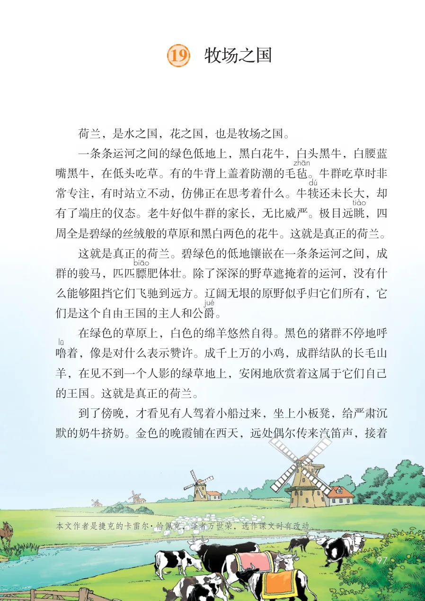
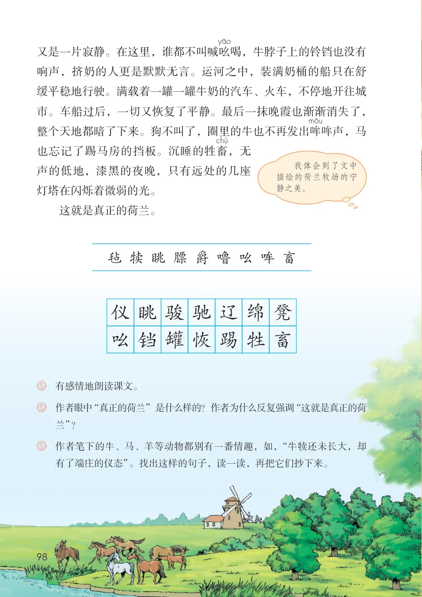

展开章节菜单
课本第 97 页
19 牧场之国
荷兰，是水之国，花之国，也是牧场之国。
一条条运河之间的绿色低地上，黑白花牛，白头黑牛，白腰蓝
嘴黑牛，在低头吃草。有的牛背上盖着防潮的毛毡
。牛群吃草时非
常专注，有时站立不动，仿佛正在思考着什么。牛犊
还未长大，却
有了端庄的仪态。老牛好似牛群的家长，无比威严。极目远眺
，四
周全是碧绿的丝绒般的草原和黑白两色的花牛。这就是真正的荷兰。
这就是真正的荷兰。碧绿色的低地镶嵌在一条条运河之间，成
群的骏马，匹匹膘
肥体壮。除了深深的野草遮掩着的运河，没有什
么能够阻挡它们飞驰到远方。辽阔无垠的原野似乎归它们所有，它
。
在绿色的草原上，白色的绵羊悠然自得。黑色的猪群不停地呼
着，像是对什么表示赞许。成千上万的小鸡，成群结队的长毛山
羊，在见不到一个人影的绿草地上，安闲地欣赏着这属于它们自己
的王国。这就是真正的荷兰。
到了傍晚，才看见有人驾着小船过来，坐上小板凳，给严肃沉
默的奶牛挤奶。金色的晚霞铺在西天，远处偶尔传来汽笛声，接着
资料说明
本文作者是捷克的卡雷尔·恰佩克，译者万世荣，选作课文时有改动。
字词积累
们是这个自由王国的主人和公爵
字词积累
噜
查看教材原页（保留全部图片、注音与原始排版）

课本第 98 页
又是一片寂静。在这里，谁都不叫喊吆
喝，牛脖子上的铃铛也没有响声，挤奶的人更是默默无言。运河之中，装满奶桶的船只在舒缓平稳地行驶。满载着一罐一罐牛奶的汽车、火车，不停地开往城市。车船过后，一切又恢复了平静。最后一抹晚霞也渐渐消失了，整个天地都暗了下来。狗不叫了，圈里的牛也不再发出哞
哞声，马也忘记了踢马房的挡板。沉睡的牲畜
，无声的低地，漆黑的夜晚，只有远处的几座灯塔在闪烁着微弱的光。
这就是真正的荷兰。
作者眼中“真正的荷兰”是什么样的？作者为什么反复强调“这就是真正的荷
兰”？作者笔下的牛、马、羊等动物都别有一番情趣，如，“牛犊还未长大，却
有了端庄的仪态”。找出这样的句子，读一读，再把它们抄下来。
字词积累
毡犊眺膘爵噜吆哞畜
字词积累
骏眺驰辽仪
字词积累
绵凳
字词积累
畜牲恢踢吆铛罐
练习与思考
我体会到了文中描绘的荷兰牧场的宁静之美。
练习与思考
有感情地朗读课文。
查看教材原页（保留全部图片、注音与原始排版）
